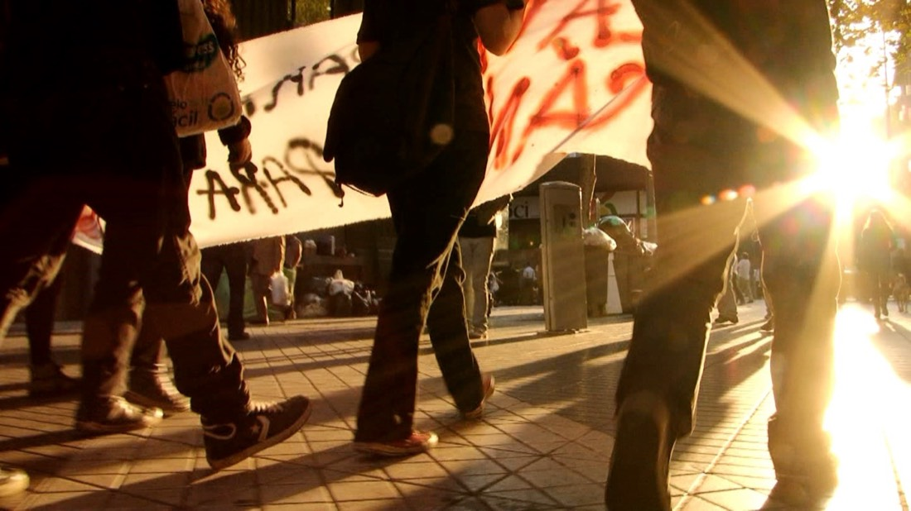
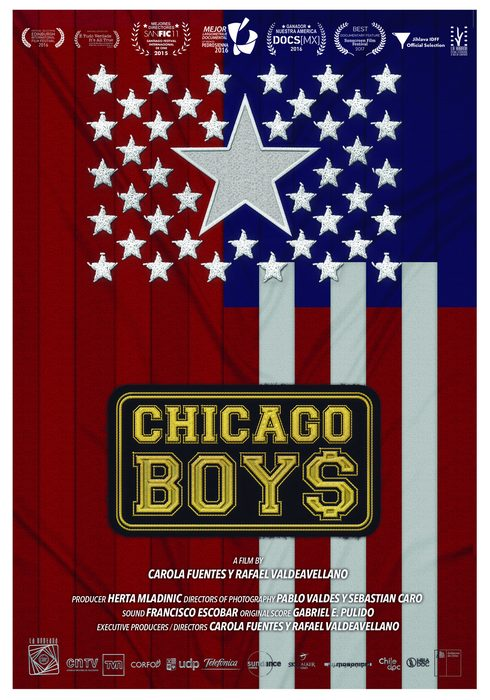
Feature documentary · 2022
Audiovisual production company · B Corp · Santiago, Chile · Since 2006
Documentaries that open windows to the stories that matter — from Antarctica to the Central American jungle, from the streets to living rooms around the world.
Who we are
Since 2006, La Ventana Cine has produced documentaries and series that cross borders: recognized by the Sundance Institute, SANFIC, and CORFO, broadcast on national television in Chile and Colombia, and screened at festivals around the world. We are a B Corporation — we measure our social and environmental impact with the same rigor we bring to every story we tell.
Selection
A window into our work — stories that traveled from Chile to the world and came back with awards, funding, and new audiences.


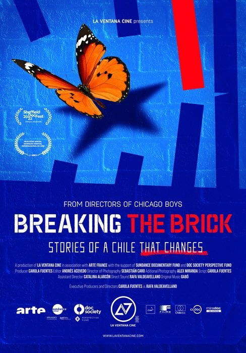
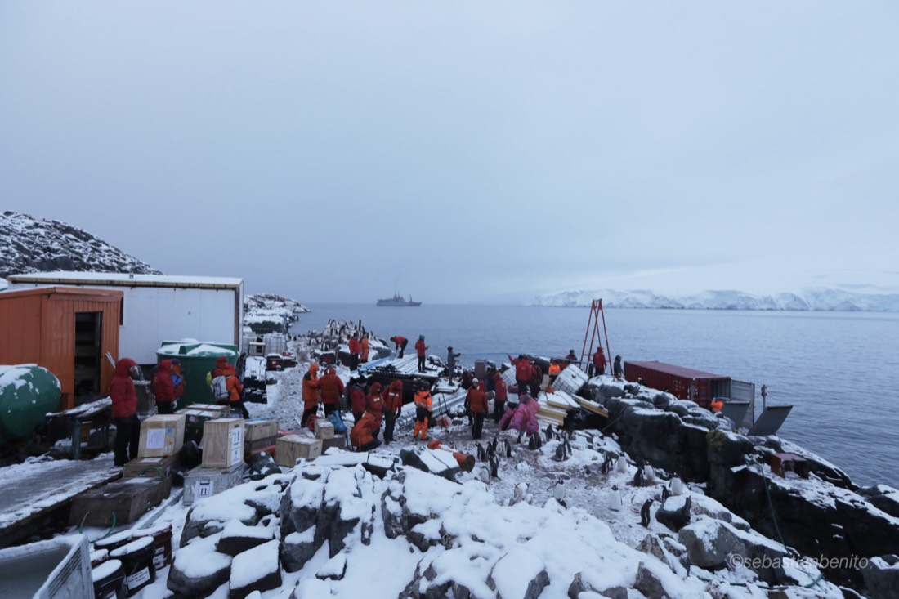
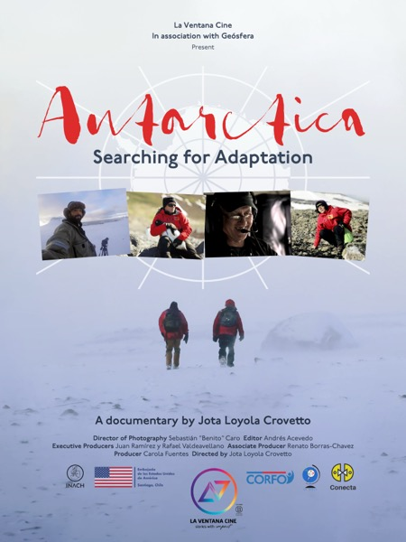
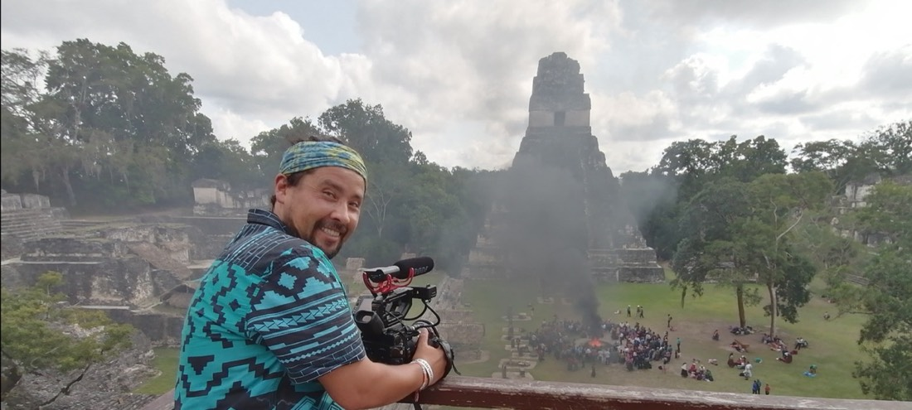
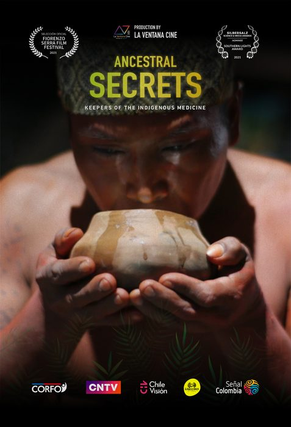
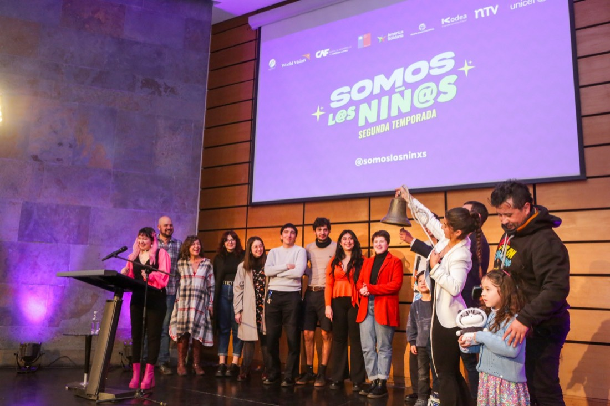
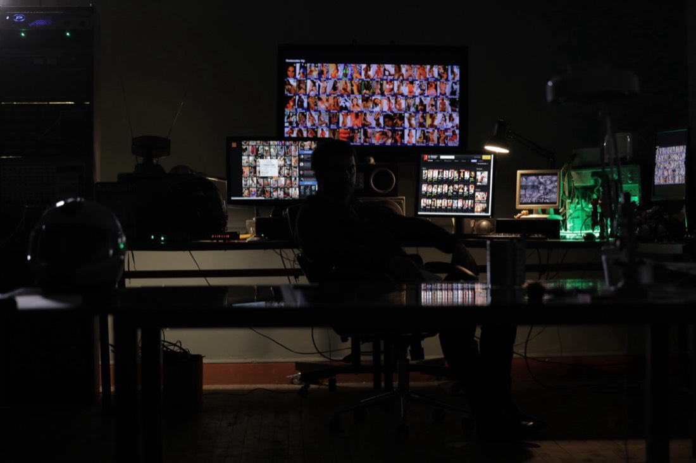
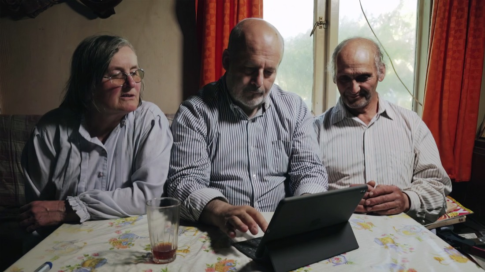
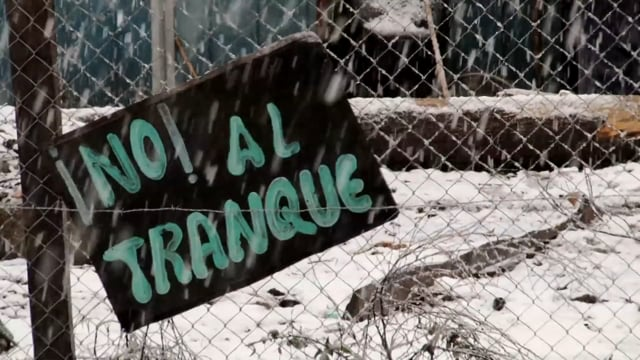
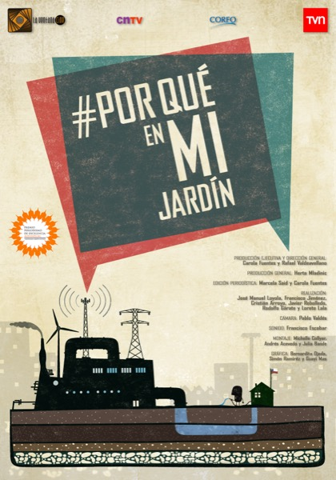
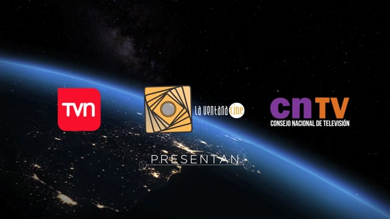
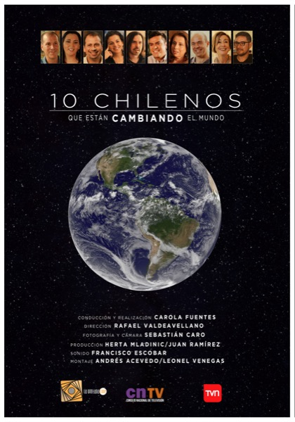
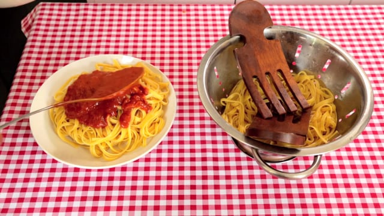
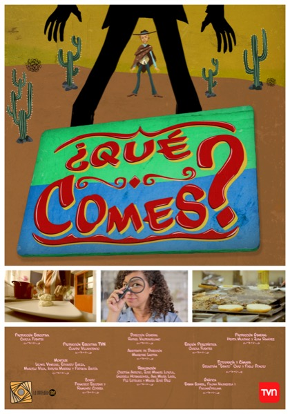
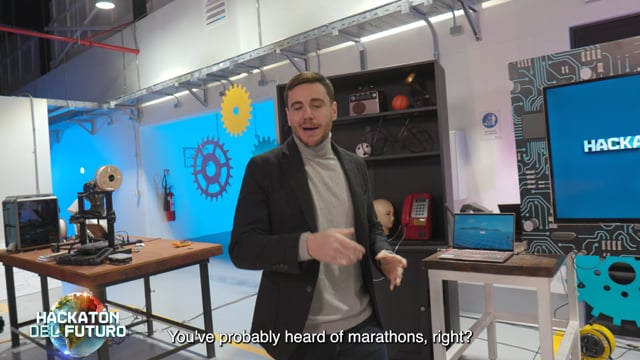
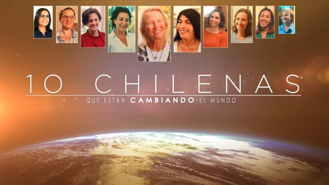
Recognized by
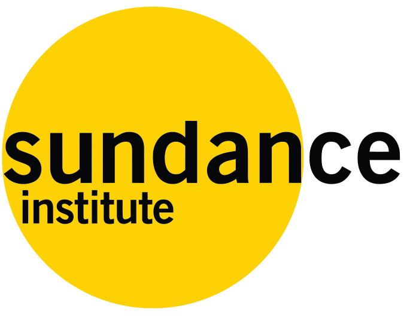
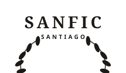
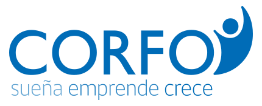
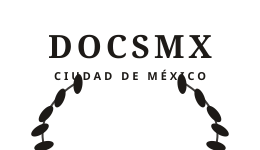
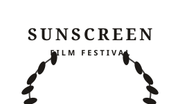
Team
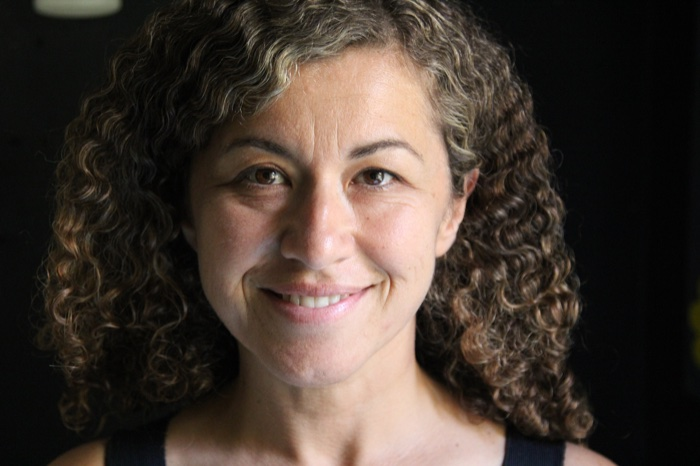
CEO · Producer · Screenwriter
Co-founder of La Ventana Cine. She has led productions recognized by the Sundance Institute, SANFIC, and DOCS MX, with a narrative voice that connects Chilean stories to international audiences.
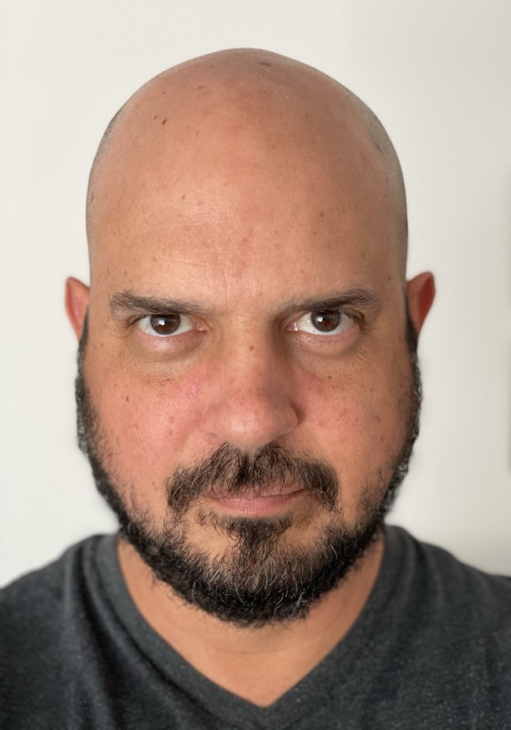
COO · Director
Co-founder of La Ventana Cine. His eye behind the camera has taken production teams from Antarctica to the Central American jungle, capturing the images that carry each story.
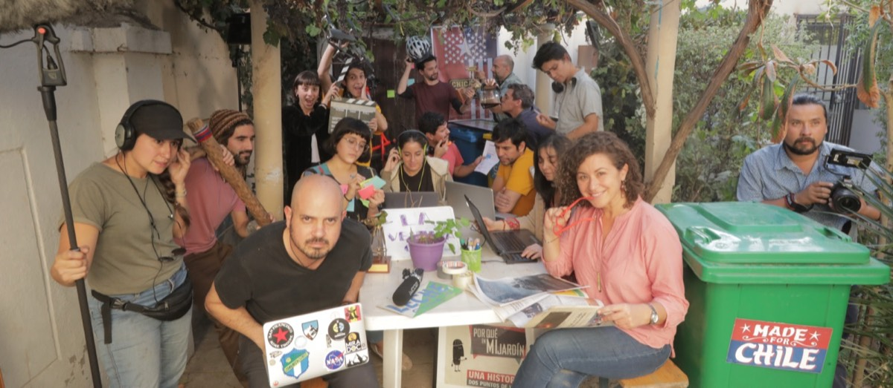